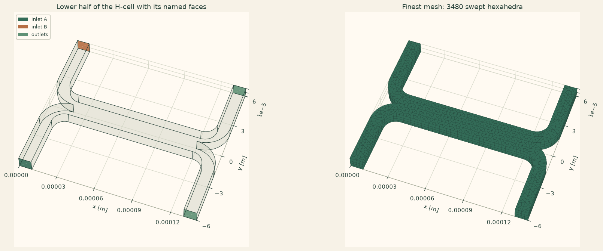

Docs › Examples › Microchannel H-cell: separation by diffusion
Laminar flow and transport · 3D
Microchannel H-cell: separation by diffusion
Two water streams flow side by side through the 100 µm contact zone of an H-shaped microchannel; small molecules diffuse across, large ones stay in their stream.

What it computes
The half channel is read from a STEP file and meshed with swept hexahedra. One problem holds the 3D Taylor-Hood flow and three solute transports with quadratic elements, each fed the computed velocity through a field coupling, and is solved on three meshes. The script that builds the STEP file comes with the notebook.
What it checks
Outlet-B concentrations 0.481, 0.415 and 0.205 mol/m³ for D = 1e-10, 5e-11 and 1e-11 m²/s against the Graetz-type exchange estimate 0.483, 0.418 and 0.203 (-0.5 %, -0.6 %, +0.9 %); water balance closed to 4e-13, solute balance to 7e-4; outlet concentration of the large molecule within 1.2 % between the two finest meshes.
Geometry
The notebook starts at the import of the CAD file microchannel_h_cell_diffusion.step: STEP (AP242), readable by any CAD program, with the names of the faces that the boundary conditions use. Put it next to the notebook.

The geometry script
The script microchannel_h_cell_diffusion_geometry.py builds the geometry with the CAD objects of OneSimulation and writes the file. Change a dimension there, run it, and run the notebook again.
"""Geometry of the OneSimulation example "Microchannel H-cell".
Builds the lower half of an H-shaped microchannel with the CAD objects of OneSimulation. Two inlet
arms (left) and two outlet arms (right), each 10 µm wide and 40 µm long, turn through quarter bends
(inner radius 10 µm, outer radius 20 µm) into the contact zone, 20 µm wide and 100 µm long. The
channel is 20 µm deep; the file holds the 10 µm below the mid-depth plane. Writes
microchannel_h_cell_diffusion.step with the face groups inlet_a, inlet_b, outlet_a, outlet_b,
mid_plane and walls (side walls and bottom).
"""
from onesim.cad.d3 import AnnularCylinder, Box, UnionFromObjects
um = 1e-6
width, half_depth, arm, inner, outer = 10 * um, 10 * um, 40 * um, 10 * um, 20 * um
start, end = 20 * um, 120 * um
parts = [
Box(
length=end - start,
width=2 * width,
height=half_depth,
origin=(start, -width, 0.0),
)
]
for x_bend, x_quadrant, x_arm in (
(start, start - outer, start - outer),
(end, end, end + inner),
):
for side in (1, -1):
y_quadrant = 0.0 if side > 0 else -outer
bend = AnnularCylinder(
inner_radius=inner,
outer_radius=outer,
length=half_depth,
origin=(x_bend, side * outer, 0.0),
)
parts += [
bend
& Box(
length=outer,
width=outer,
height=half_depth,
origin=(x_quadrant, y_quadrant, 0.0),
),
Box(
length=width,
width=arm,
height=half_depth,
origin=(x_arm, outer if side > 0 else -outer - arm, 0.0),
),
]
channel = UnionFromObjects(objects=parts)
port = lambda x, side: channel.select(
faces=lambda face: abs(face.center[1] - side * (outer + arm)) < 1e-12
and abs(face.center[0] - x - width / 2) < 1e-12
)
groups = dict(
inlet_a=port(start - outer, -1),
inlet_b=port(start - outer, 1),
outlet_a=port(end + inner, -1),
outlet_b=port(end + inner, 1),
mid_plane=channel.select(
faces=lambda face: face.kind == "plane"
and abs(face.center[2] - half_depth) < 1e-12
),
)
ends = (
groups["inlet_a"]
| groups["inlet_b"]
| groups["outlet_a"]
| groups["outlet_b"]
| groups["mid_plane"]
)
channel = channel.grouped(
**groups, walls=channel.select(faces=lambda face: True) - ends
)
channel.save("microchannel_h_cell_diffusion.step")The notebook
The complete notebook, cell by cell. Run it to produce the figures and the comparison printout.
The H-cell, the microfluidic "H-filter" (J. P. Brody and P. Yager, Sensors and Actuators A 58, 13, 1997), brings two laminar streams into contact for a controlled time. Stream A enters with a solute at \(c_0=1\) mol/m³, stream B with pure water. At a Reynolds number of \(10^{-3}\) the streams do not mix by convection; the solute crosses the interface only by diffusion. A small molecule (large diffusivity \(D\)) leaves through both outlets almost equally, a large molecule stays in stream A: the cell separates by molecular size.
Every arm is 10 µm wide and 40 µm long and joins the contact zone, 20 µm wide and 100 µm long, through a quarter bend; the channel is 20 µm deep. Each inlet carries 20 pl/s of water (mean velocity 0.1 mm/s). The diffusivities are \(D=10^{-10}\), \(5\cdot10^{-11}\) and \(10^{-11}\) m²/s. The steady flow and the steady convection-diffusion of the dilute solute in that flow obey
The lower half of the channel comes from the CAD file microchannel_h_cell_diffusion.step, written by microchannel_h_cell_diffusion_geometry.py with the CAD objects of OneSimulation. The mid-depth plane is a plane of symmetry. The file names the faces:
| face | flow | solute | |---|---|---| | inlet_a | fully developed duct profile, 20 pl/s | \(c=c_0\) | | inlet_b | fully developed duct profile, 20 pl/s | \(c=0\) | | outlet_a, outlet_b | traction free | no diffusive flux | | mid_plane | symmetry: impermeable, shear free | no flux | | walls (side walls and bottom) | no slip | no flux |
Reference. A Graetz-type exchange estimate. Two streams of width \(W=10\) µm side by side in a channel of width \(2W\) exchange solute by diffusion across \(y\); after the contact time \(\tau\) the fraction of the solute found in stream B is (J. Crank, The Mathematics of Diffusion, 2nd ed., Oxford 1975, Sec. 4.3)
and the outlet-B concentration is \(c_B=f_B\,c_0\). For plug flow the contact time is \(\tau=L/\bar u\). In the real channel the interface moves fast at mid-depth and slowly near the bottom, and the slow fluid has more time to exchange (A. E. Kamholz et al., Anal. Chem. 71, 5340, 1999; R. F. Ismagilov et al., Appl. Phys. Lett. 76, 2376, 2000). Averaging the short-contact flux \(c_0\sqrt{D\,u_i(z)\,L/\pi}\) over a parabolic interface velocity \(u_i(z)\) with the duct peak \(u_\max=2.096\,\bar u\) of a square section (R. K. Shah and A. L. London, Laminar Flow Forced Convection in Ducts, Academic Press 1978, Ch. VII) gives the effective contact time \(\tau_\mathrm{eff}=(\pi/4)^2\,(u_\max/\bar u)\,L/\bar u\). The estimate neglects the merging and parting of the streams and axial diffusion, so agreement to a few per cent is expected.
import numpy as np
from onesim.cad.d2 import Plane
from onesim.cad.exchange import load
from onesim.materials import IsotropicSolid, NewtonianFluid
from onesim.meshing import Geometric, SweepMesher
from onesim.numerics import Numerics
from onesim.numerics.fem import FiniteElement, GalerkinAdvection, Lagrange, TaylorHood
from onesim.numerics.field_transfer import FieldInterpolation
from onesim.numerics.linear import SparseDirect
from onesim.numerics.nonlinear import Newton
from onesim.physics.heat_transfer import (
ConvectiveHeatTransfer,
FixedTemperature,
HeatFlux,
)
from onesim.physics.hydrodynamics import (
FixedVelocity,
FlowTraction,
FreeSlipLaw,
IncompressibleNavierStokes,
NoSlipWall,
WallShear,
fully_developed_inflow,
)
from onesim.results.comparisons import convergence
from onesim.results.derived import derived_field
from onesim.simulation import Problem, Simulation
from onesim.simulation.field_connections import FieldCoupling
from onesim.simulation.initial_conditions import InitialValue
from onesim.visualization import plots, theme
theme.set()Geometry and mesh
load returns the half channel with its named faces. SweepMesher covers the bottom of the channel with quadrilaterals and sweeps them up to the mid-depth plane into hexahedra, with thinner layers at the bottom wall. Three cell sizes (with two, three and four layers) serve the mesh study.
um = 1e-6
channel = load("microchannel_h_cell_diffusion.step")
faces = channel.boundaries
bottom = channel.select(
faces=lambda face: face.kind == "plane" and abs(face.center[2]) < 1e-12
)
sizes = [5.0 * um, 4.0 * um, 3.0 * um]
meshes = [
SweepMesher(
source=bottom, target_size=size, layers=Geometric(layers, ratio=2.0)
).generate(channel)
for size, layers in zip(sizes, (2, 3, 4))
]
view = plots.Camera(elevation=55, azimuth=-70)
fig = plots.figure(1, 2, size=(16, 6))
plots.geometry(
channel,
selection={
"inlet A": faces.inlet_a,
"inlet B": faces.inlet_b,
"outlets": faces.outlet_a | faces.outlet_b,
},
labels=False,
camera=view,
title="Lower half of the H-cell with its named faces",
ax=fig[0],
)
plots.mesh(
meshes[-1],
groups=("all",),
legend=False,
camera=view,
title=f"Finest mesh: {meshes[-1].cell_count} swept hexahedra",
ax=fig[1],
)
plots.show()Model
One problem holds the flow and three solute transports. The flow is IncompressibleNavierStokes with Taylor-Hood elements. A dilute solute obeys the same convection-diffusion equation as temperature, so each solute is a ConvectiveHeatTransfer model with unit heat capacity and the diffusivity in place of the conductivity; a FieldCoupling hands it the computed velocity. The solutes use quadratic elements on the same mesh as the flow. The problem is solved on the three meshes, each with its own fully developed inflow profiles.
W, L, mean_speed, c0 = 10 * um, 100 * um, 1.0e-4, 1.0
diffusivities = [1e-10, 5e-11, 1e-11]
flow = IncompressibleNavierStokes(
domain=channel.volume,
material=NewtonianFluid(density=1000.0, dynamic_viscosity=1.0e-3),
)
solutes = [
ConvectiveHeatTransfer(
domain=channel.volume,
velocity=None,
material=IsotropicSolid(
density=1.0,
specific_heat_capacity=1.0,
thermal_conductivity=D,
youngs_modulus=1.0,
poisson_ratio=0.3,
thermal_expansion_coefficient=0.0,
),
)
for D in diffusivities
]
transport = Numerics(
spatial=FiniteElement(element=Lagrange(order=2), convection=GalerkinAdvection()),
linear_solver=SparseDirect(),
)
numerics = {
flow: Numerics(
spatial=FiniteElement(element=TaylorHood()),
initial_guess={flow.velocity: (0.0, 0.0, 0.0)},
nonlinear_solver=Newton(
linear_solver=SparseDirect(),
absolute_tolerance=1e-15,
relative_tolerance=1e-10,
maximum_iterations=10,
),
),
**{solute: transport for solute in solutes},
}
results = [
Simulation(
mesh=dict.fromkeys((flow, *solutes), mesh),
numerics=numerics,
problem=Problem(
name="Microchannel H-cell",
geometry=channel,
physics=(flow, *solutes),
boundary_conditions=(
FixedVelocity(
boundary=faces.inlet_a,
physics=flow,
value=fully_developed_inflow(
mesh,
faces.inlet_a,
mean_velocity=mean_speed,
no_slip=faces.walls,
),
),
FixedVelocity(
boundary=faces.inlet_b,
physics=flow,
value=fully_developed_inflow(
mesh,
faces.inlet_b,
mean_velocity=mean_speed,
no_slip=faces.walls,
),
),
FlowTraction(
boundary=faces.outlet_a | faces.outlet_b,
physics=flow,
value=lambda x, y, z: np.zeros((len(x), 3)),
),
NoSlipWall(boundary=faces.walls, physics=flow),
WallShear(boundary=faces.mid_plane, physics=flow, law=FreeSlipLaw()),
*[
condition
for solute in solutes
for condition in (
FixedTemperature(
physics=solute, boundary=faces.inlet_a, value=c0
),
FixedTemperature(
physics=solute, boundary=faces.inlet_b, value=0.0
),
HeatFlux(
physics=solute,
boundary=faces.all - faces.inlet_a - faces.inlet_b,
value=0.0,
),
)
],
),
initial_conditions=(InitialValue(flow.velocity, (0.0, 0.0, 0.0)),),
couplings=tuple(
FieldCoupling(
source=flow.velocity,
target=solute.advecting_velocity,
transfer=FieldInterpolation(),
)
for solute in solutes
),
),
).solve_stationary()
for mesh in meshes
]
velocity = results[-1].field(flow.velocity)
concentrations = [results[-1].field(solute.temperature) for solute in solutes]Balances and outlet concentrations
The water flow through a face is the integral of the normal velocity, the solute flow the integral of the normal component of \(c\,\mathbf u\). Both are doubled for the full depth. The outlet-B concentration is the solute flow divided by the water flow through that face (mixing-cup average).
ports = ("inlet_a", "inlet_b", "outlet_a", "outlet_b")
water = {
port: 2
* velocity.integrate(boundary=getattr(faces, port), normal_component=True).value
for port in ports
}
carried = [
derived_field(
velocity,
lambda u, points, c=c: u * np.ravel(c.evaluate(points))[:, None],
name="solute_flux",
unit="mol/m^2/s",
components=("x", "y", "z"),
)
for c in concentrations
]
solute = [
{
port: 2
* flux.integrate(boundary=getattr(faces, port), normal_component=True).value
for port in ports
}
for flux in carried
]
print(
f"water [pl/s]: in A {-1e15 * water['inlet_a']:.4f}, in B {-1e15 * water['inlet_b']:.4f}, out A {1e15 * water['outlet_a']:.4f}, "
f"out B {1e15 * water['outlet_b']:.4f}; out/in - 1 = {-sum(water.values()) / (water['inlet_a'] + water['inlet_b']):+.1e}"
)
for D, flows in zip(diffusivities, solute):
print(
f"solute D = {D:.0e} m²/s [fmol/s]: in {-1e15 * (flows['inlet_a'] + flows['inlet_b']):.4f}, out A {1e15 * flows['outlet_a']:.4f}, "
f"out B {1e15 * flows['outlet_b']:.4f}; out/in - 1 = {-sum(flows.values()) / (flows['inlet_a'] + flows['inlet_b']):+.1e}"
)
tau = L / mean_speed
tau_eff = (np.pi / 4) ** 2 * 2.096 * tau
exchange = lambda D, time, n=np.arange(1, 2001, 2): 0.5 - np.sum(
4 / (n * np.pi) ** 2 * np.exp(-((n * np.pi) ** 2) * D * time / (4 * W**2))
)
c_b = [flows["outlet_b"] / water["outlet_b"] for flows in solute]
print(
"D [m²/s] c_B simulation [mol/m³] Graetz-type estimate deviation plug-flow estimate c range in the channel"
)
for D, value, c in zip(diffusivities, c_b, concentrations):
nodal = np.ravel(c.evaluate(meshes[-1].coordinates))
print(
f"{D:8.0e} {value:25.4f} {c0 * exchange(D, tau_eff):22.4f} {100 * (value / (c0 * exchange(D, tau_eff)) - 1):+10.1f} % "
f"{c0 * exchange(D, tau):20.4f} {nodal.min():+.3f} to {nodal.max():.3f}"
)Mesh study
The outlet-B concentration of the large molecule (\(D=10^{-11}\) m²/s, the steepest fronts) and the pressure drop from inlet A to the outlets on the three meshes.
c_low = [
derived_field(
result.field(flow.velocity),
lambda u, points, c=result.field(solutes[-1].temperature): u
* np.ravel(c.evaluate(points))[:, None],
name="solute_flux",
unit="mol/m^2/s",
components=("x", "y", "z"),
)
.integrate(boundary=faces.outlet_b, normal_component=True)
.value
/ result.field(flow.velocity)
.integrate(boundary=faces.outlet_b, normal_component=True)
.value
for result in results
]
inlet_point = [[5 * um, -60 * um + 1e-9, 10 * um - 1e-12]]
drop = [
float(result.field(flow.pressure).evaluate(inlet_point)[0]) for result in results
]
study_c, study_p = convergence(c_low, sizes), convergence(drop, sizes)
print("cell size [µm] hexahedra c_B for D = 1e-11 [mol/m³] inlet pressure [Pa]")
for size, mesh, value, p in zip(sizes, meshes, c_low, drop):
print(f"{size / um:14.1f} {mesh.cell_count:11d} {value:28.4f} {p:21.4f}")
print(
f"change between the two finest meshes: c_B {100 * study_c.change:+.2f} %, inlet pressure {100 * study_p.change:+.2f} %"
)Figure
The concentration of the large and the small molecule on the mid-depth plane, two cross-sections of the contact zone for the large molecule (full depth, mirrored at the symmetry plane), the outlet-B concentration against the diffusivity with both estimates, and the mesh study.
D_line = np.geomspace(3e-12, 3e-10, 80)
fig = plots.figure(
layout=[
["slow"] * 3 + ["fast"] * 3,
["cut 70"] * 3 + ["cut 110"] * 3,
["outlet"] * 3 + ["mesh"] * 3,
],
size=(16, 15),
)
for panel, index in (("slow", 2), ("fast", 0)):
plots.surface(
concentrations[index],
boundary=faces.mid_plane,
limits=(0.0, c0),
contours=9,
subdivisions=3,
aspect=1.0,
label="c [mol/m³]",
title=f"D = {diffusivities[index]:.0e} m²/s on the mid-depth plane: c_B = {c_b[index]:.3f} mol/m³",
ax=fig[panel],
)
for x_cut in (70, 110):
plots.section(
concentrations[2],
plane=Plane(origin=(x_cut * um, 0.0, 0.0), normal=(1.0, 0.0, 0.0)),
symmetry={"planes": [((0, 0, 1), (0, 0, 10 * um))]},
limits=(0.0, c0),
contours=9,
subdivisions=3,
label="c [mol/m³]",
title=f"D = 1e-11 m²/s, x = {x_cut} µm",
xlimits=(-W, W),
ylimits=(0.0, 2 * W),
ax=fig[f"cut {x_cut}"],
)
plots.line(
D_line,
{"Graetz-type estimate": [c0 * exchange(D, tau_eff) for D in D_line]},
reference={"plug-flow estimate": (D_line, [c0 * exchange(D, tau) for D in D_line])},
points={"3D simulation": (diffusivities, c_b)},
hlines={"complete mixing": 0.5 * c0},
scale="logx",
ylimits=(0.0, 0.55),
xlabel="diffusivity D [m²/s]",
ylabel="concentration at outlet B [mol/m³]",
title="Separation by molecular size",
legend="lower right",
ax=fig["outlet"],
)
plots.line(
[size / um for size in sizes],
{"3D simulation, D = 1e-11 m²/s": c_low},
markers=True,
hlines={"Graetz-type estimate": c0 * exchange(1e-11, tau_eff)},
xlabel="cell size [µm]",
ylabel="concentration at outlet B [mol/m³]",
title="Mesh study",
ax=fig["mesh"],
)
plots.show()Going further
Lengthen the contact zone in microchannel_h_cell_diffusion_geometry.py and write the STEP file again, or lower the inlet flow: the contact time grows and the large molecule reaches outlet B in larger amounts. Feed outlet B of one cell into the next to enrich the small molecule further, or make the viscosity depend on the concentration to see the interface shift towards the more viscous stream.